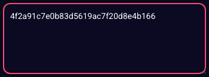
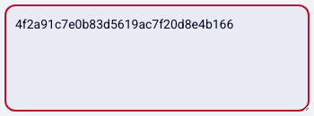

Text area
Several lines of typed text: a pasted seed, a hash. The Text field's twin, three rows tall and free to grow downward. Everything on this page is drawn by design/system/components/text-area.css through index.css.
Anatomy
| Part | Class or element | What to change there |
|---|---|---|
| The box | .textarea on a <textarea> | the tile's fill, the 1px edge and the button's 12px corner, as the Text field has them; padding all round |
| Height | min-height, rows | never under three rows of the field (120px); the rows attribute grows it for a longer value |
| The handle | resize: vertical | the corner a person drags down; never sideways, so the layout keeps its width |
| The typed text | .textarea, ::placeholder | white for what is typed, the muted grey for the hint; 1.5 line height |
| Refusal | [aria-invalid="true"] | the red ring inside the box; set by the product's script, never by a class (D-260) |
Variants and sizes
One form. It has no size axis: its height is set by the number of rows it is given, and its width is the container's.
- One form on purpose. A text area differs from a Text field by what it holds, not by how it looks, so it shares the plate, the corner and the states and has no emphasis or size of its own.
- Height = the value's length. Three rows at least; set
rowsfor a value that is longer when it arrives (a 64 character hash fits two lines of the Verify form).
| Form | Measured | Where it stands |
|---|---|---|
| Text area | the Verify form's hash and seed on Provably fair |
When to use
A text area takes a value that is long or arrives pasted: the server seed hash and the server seed of a round, both 64 characters, that a person checks by eye against ours (design principle 1: its numbers are checkable). Its label and its reason belong to the Field, the reason a plain sentence that says what is wrong and how to put it right ("This is 32 characters. A server seed hash is 64.", microcopy 1.2-34 and the Verify form). It stays live while it refuses (D-58).
Rule and anti-rule
Use it
The Verify form's "Server seed hash, published before the round": a pasted 64 character value that wraps over two lines, with the red ring and its reason beneath it when it is the wrong length.
Take another component
A value that fits on one line is a Text field, even a long one such as a nonce. A value that is only read and copied is a Copyable value, not a field. Free writing by a person is not drawn anywhere in the product today (microcopy, "User content").
States
Live at rest, on this page's theme: point at it, type in it, reach it with Tab.
This is 32 characters. A server seed hash is 64.
Snapshots of the same instances, dark on the left and light on the right, taken with reduced motion. The base set is the Text field's, shot there once; here only the refusal, the state this atom's decision names (D-260, Q2).


--line-error- The same answer, said once: no hover, and focus-visible takes the pink ring (
--line-lit), exactly as on the Text field, on its page. - The refusal moved from
--color-downto--color-error(rename map row 29, merged drift, D-260): the Field's declaration and this ring were two reds for one refusal. It reads the role--line-error. - No disabled look: a text area stays live and refuses with its reason (D-58).
node design/kit/tools/shoot-states.js http://localhost:8765/ text-area # re-shoot after a change to text-area.css or its tokens node design/kit/tools/shoot-states.js http://localhost:8765/ text-area --check # step 9: fails if a snapshot drifted
In the code
| Token | Kind | Dark | Light |
|---|
Read live from tokens.css. Geometry (--size-button-m, --radius-button, --space-3) and type come straight from the primitives. --line-lit is the role the Text field reads, so the two draw one focus (D-264).
File: design/system/components/text-area.css, loaded by design/system/index.css in the atoms' group.
<textarea class="textarea" id="v-hash" rows="2" spellcheck="false" aria-invalid="true" aria-describedby="v-hash-e">4f2a...</textarea> <p class="note note--refuse" id="v-hash-e">This is 32 characters. A server seed hash is 64.</p>
Stands on: Provably fair, the Verify form. Until step 8 those screens still read kit.css; step 6 moves their markup onto this file's forms by the rename map.